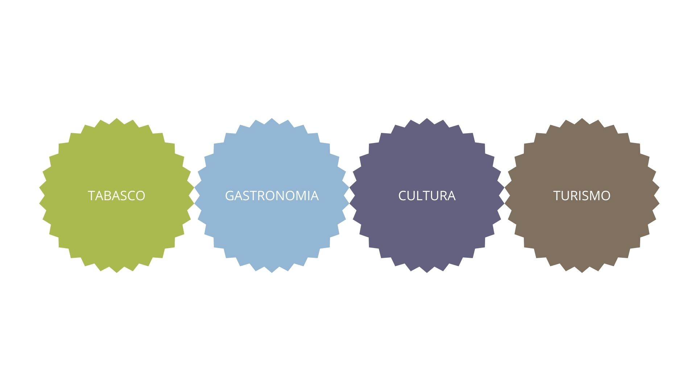
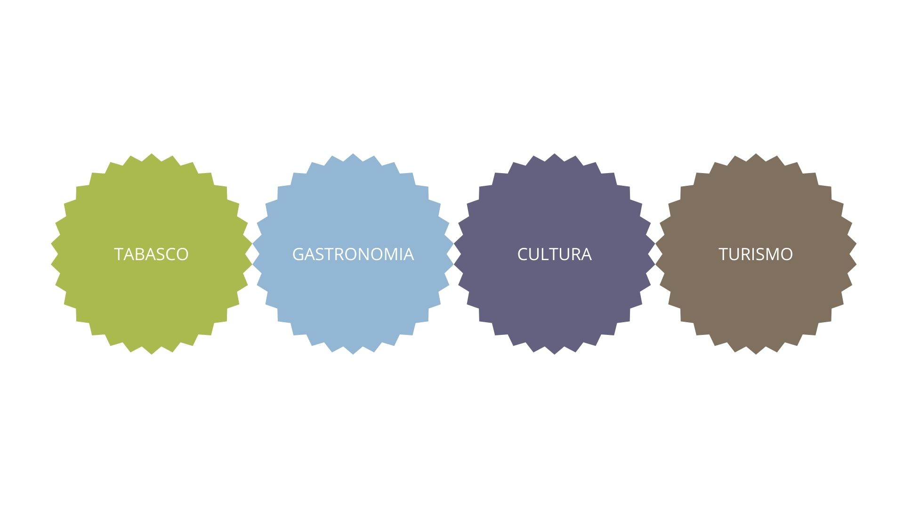

Descubre a Tabasco
HISTORIA
Tabasco es uno de los estados más antiguos de México, con una historia que se remonta a la civilización olmeca alrededor del 1500 a.C. Posteriormente, la cultura maya floreció en la región. La conquista española comenzó en 1518 con Juan de Grijalva y culminó en 1564. En 1821, Tabasco se unió al Imperio Mexicano tras proclamar su independencia
GASTRONOMIA
La gastronomía tabasqueña combina influencias mayas, chontales y españolas. Destacan platos como tamales de chipilín, tortuga en salsa verde, y puchero tabasqueño. También es conocida por el uso de chiles habaneros y mariscos frescos. Además, hay influencias africanas en platos como el dzotobichay.
CULTURA
La cultura tabasqueña es rica y diversa, reflejando las influencias indígenas y coloniales. La música, danza y artesanía son parte integral de su patrimonio cultural. Las celebraciones religiosas y festivales también son importantes, donde se sirven platos tradicionales.
TURISMO
Tabasco ofrece un turismo cultural y natural. Los sitios arqueológicos como La Venta y Comalcalco son destacados. Además, la capital Villahermosa cuenta con parques naturales y museos. La costa del Golfo de México ofrece oportunidades para disfrutar de la pesca y la playa.
|
 
